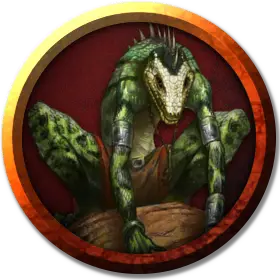

Людоящер шаман
Lizardfolk Shaman
Средний Гуманоид (Людоящер), нейтральный

Класс Доспеха 13 (природный доспех)
Хиты 27 (5к8 + 5)
Скорость 30 футов, плавая 30 футов
| мод | спас | ||
|---|---|---|---|
| СИЛ | 15 | +2 | +2 |
| ЛОВ | 10 | +0 | +0 |
| ТЕЛ | 13 | +1 | +1 |
| мод | спас | ||
|---|---|---|---|
| ИНТ | 10 | +0 | +0 |
| МДР | 15 | +2 | +2 |
| ХАР | 8 | −1 | −1 |
Навыки Восприятие +4, Выживание +6, Скрытность +4
Чувства пассивное Восприятие 14
Языки Драконий
Опасность 2 (450 опыта)
Бонус мастерства +2
Среда обитания Болото, Лес
Особенности
Задержка дыхания. Людоящер может задержать дыхание на 15 минут.
Использование заклинаний (только в форме людоящера). Людоящер является заклинателем 5-го уровня. Его базовой характеристикой является Мудрость (Сл спасброска от заклинания 12, +4 к попаданию атаками заклинаниями). У него подготовлены следующие заклинания друида:
• Заговоры (неограниченно): искусство друидов [druidcraft], сотворение пламени [produce flame], терновый кнут [thorn whip];
• 1 уровень (4 ячейки): опутывание [entangle], туманное облако [fog cloud];
• 2 уровень (3 ячейки): раскалённый металл [heat metal], шипы [spike growth];
• 3 уровень (2 ячейки): призыв животных [conjure animals] (только рептилии), рост растений [plant growth].
Действия
Мультиатака (только в форме людоящера). Людоящер совершает две атаки: одну укусом, и одну когтями.
Укус. Рукопашная атака оружием: +4 к попаданию, досягаемость 5 футов, одна цель. Попадание: 5 (1к6 + 2) колющего урона или 7 (1к10 + 2) колющего урона в форме крокодила. Если людоящер находится в форме крокодила, а цель — существо с размером не больше Большого, то цель становится схваченной (Сл высвобождения 12). Пока цель схвачена, она опутана, и людоящер не может кусать другую цель. Если людоящер принимает свою истинную форму, захват оканчивается.
Когти (только в форме людоящера). Рукопашная атака оружием: +4 к попаданию, досягаемость 5 футов, одна цель. Попадание: 4 (1к4 + 2) рубящего урона.
Смена формы (перезаряжается после короткого или продолжительного отдыха). Людоящер магическим образом превращается в крокодила [crocodile], оставаясь в этой форме до 1 часа. Он может вернуть свою истинную форму бонусным действием. Все его статистики, кроме размера, остаются одинаковыми во всех формах. Все несомое и носимое им снаряжение не превращается. Он принимает свой истинный облик, если умирает.
Описание
См. дополнительно статью: "Бестиарий: Людоящеры"